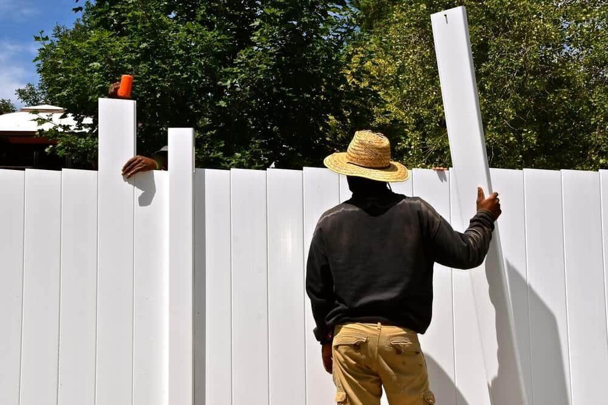

In This Guide
- Vinyl's strongest environmental point is a long service life with no stain, paint, or sealer, which means fewer replacements and fewer products over the years.
- Vinyl is a plastic made from fossil-based raw materials, and old sections can be hard to recycle, so disposal is its weak spot.
- Wood is renewable and metal is widely recycled, so the greener choice depends on where it comes from, how long it lasts, and where it ends up.
- Ask about recycled content, expected lifespan, and what happens to your old fence before you decide.
A fence stays on your property for many years, so the material you pick has a real footprint. It comes from how the fence is made, how long it lasts, what you put on it along the way, and where it ends up when you are done with it. Vinyl has some genuine environmental strengths and a couple of real weak spots. Here is an even-handed look.
At Big Easy Fence, we would rather you understand the trade-offs than take a slogan at face value. The types of fences available, from wood to metal to vinyl, each come out differently depending on which of those factors you weigh most.
What "Green" Means for a Fence
No single number tells you whether a fence is eco-friendly. It helps to look at the whole life of the product in three stages.
Making It
Every material takes resources and energy to produce. Vinyl is a plastic (PVC) made from fossil-based raw materials, and turning it into fence parts takes energy. Aluminum takes a lot of energy to produce from raw ore. Wood is grown, then cut, dried, and often treated. Some vinyl products contain recycled content, and it is fair to ask a supplier whether yours does.
Using It
This is where the years add up. A fence that needs repainting, restaining, or resealing every few years keeps consuming products and time. A fence that needs an occasional wash does not. Length of service matters here too, because a fence that lasts longer is replaced less often.
Disposing of It
At the end, treated wood, plastic, and coated metal all raise different questions. Metal is widely recycled. Wood can sometimes be reused or chipped, though treated lumber has its own rules. Vinyl is not biodegradable, and recycling old fence sections depends on what programs exist near you.
Where Vinyl Does Well
The case for vinyl rests mostly on the "using it" stage, and that case is a good one.

Lifespan and Upkeep
- A long service life. Vinyl does not rot, and it is not a food source for termites, two problems that shorten the life of a wood fence in a humid place like south Louisiana.
- No stain, paint, or sealer. You skip the recurring coatings and the solvents and cleanup that come with them. A wash with soap and water does the job.
Fewer Replacements, Less Effort
- Fewer replacements. If a vinyl fence stays sound for many years, you buy and dispose of fewer fences over the life of the house.
- Less time on your weekends. Lower upkeep is a comfort benefit as much as an environmental one, and people tend to keep a fence they do not have to fight with.
Where Vinyl Falls Short
Anyone who tells you vinyl is a green product without qualification is skipping half the story.
Raw Material and Disposal
- Fossil-based raw material. PVC is made from petroleum and natural gas products, so it is not a renewable resource the way responsibly sourced wood is.
- Disposal is hard. Vinyl does not break down, and many local recycling programs do not accept fence sections. Ask what happens to your old fence before the crew hauls it away.
Damage and Early Failure
- Damage often means replacement. A cracked panel is usually swapped out rather than patched, which adds to the waste stream.
- Heat and impact. Strong impacts and extreme temperatures can crack or warp vinyl, and a fence that fails early loses its environmental advantage.
The name of this post promises a smaller carbon footprint. In fairness, that depends on how long the fence lasts and what you compare it to. Vinyl's case is strongest when it replaces a fence that would have needed constant treatment and early replacement.
How Wood and Metal Compare
Comparing materials shows why the answer is never one-sided. A wood fence and a metal fence each have a different environmental profile.
| Material | Environmental Strength | Environmental Weak Spot |
|---|---|---|
| Vinyl | Long life and no recurring coatings | Fossil-based plastic that is hard to recycle |
| Wood | Renewable when responsibly sourced | Needs sealing or staining, and rot can shorten its life |
| Aluminum | Widely recycled and does not rust | Energy-intensive to produce from raw ore |
| Steel and Iron | Strong, long-lived, and recyclable | Needs protective coatings to keep rust away |
A fence that stays sound for decades means fewer materials made, hauled, and thrown away. That holds for any material, so pick the one you will actually maintain and keep.
Questions to Ask Before You Buy
These questions get you specific answers from a supplier or contractor and cut through general claims.
About the Product
- Does it contain recycled material? If so, ask how much and how they know.
- How long should it last in Gulf Coast sun and humidity? A good answer names the product line and the conditions, not a round number.
- Where does the wood come from? For lumber, ask about the source and the treatment.
About Upkeep and Disposal
- What will it need from me? Cleaning, coatings, and repairs all count.
- What happens to the old fence? Ask whether it is hauled to a landfill, reused, or recycled.
Choosing With Your Eyes Open
Vinyl earns its place on the strength of a long life and low upkeep, and it loses ground on raw material and disposal. Wood and metal have their own mixed records. The greener fence for your home is the one that fits your yard, holds up in our weather, and stays in service for a long time.
If you are sorting through the options for a home, the residential fencing page is a good place to start, and a free estimate can put real numbers and materials in front of you.
Want Help Weighing Your Fence Options?
Tell us how you plan to use the fence and what matters most to you. We will lay out the trade-offs for each material.